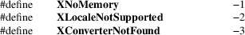

XmbTextListToTextProperty, XwcTextListToTextProperty, Xutf8TextListToTextProperty, XmbTextPropertyToTextList, XwcTextPropertyToTextList, Xutf8TextPropertyToTextList, XwcFreeStringList, XDefaultString − convert text lists and text property structures
|
int XmbTextListToTextProperty(Display *display, char **list, int count, XICCEncodingStyle style, XTextProperty *text_prop_return); | |
|
int XwcTextListToTextProperty(Display *display, wchar_t **list, int count, XICCEncodingStyle style, XTextProperty *text_prop_return); | |
|
int Xutf8TextListToTextProperty(Display *display, char **list, int count, XICCEncodingStyle style, XTextProperty *text_prop_return); | |
|
int XmbTextPropertyToTextList(Display *display, _Xconst XTextProperty *text_prop, char ***list_return, int *count_return); | |
|
int XwcTextPropertyToTextList(Display *display, _Xconst XTextProperty *text_prop, wchar_t ***list_return, int *count_return); | |
|
int Xutf8TextPropertyToTextList(Display *display, _Xconst XTextProperty *text_prop, char ***list_return, int *count_return); | |
|
void XwcFreeStringList(wchar_t **list); | |
|
char *XDefaultString(void) |
text_prop_return
Returns the XTextProperty structure.
|
text_prop |
Specifies the XTextProperty structure to be used. |
list_return
Returns a list of null-terminated character strings.
count_return
Returns the number of strings.
|
list |
Specifies the list of strings to be freed. |
The XmbTextListToTextProperty, XwcTextListToTextProperty and Xutf8TextListToTextProperty functions set the specified XTextProperty value to a set of null-separated elements representing the concatenation of the specified list of null-terminated text strings. The input text strings must be given in the current locale encoding (for XmbTextListToTextProperty and XwcTextListToTextProperty), or in UTF-8 encoding (for Xutf8TextListToTextProperty).
The functions set the encoding field of text_prop_return to an Atom for the specified display naming the encoding determined by the specified style and convert the specified text list to this encoding for storage in the text_prop_return value field. If the style XStringStyle or XCompoundTextStyle is specified, this encoding is “STRING” or “COMPOUND_TEXT”, respectively. If the style XUTF8StringStyle is specified, this encoding is “UTF8_STRING”. (This is an extension introduced by The XFree86 Project, Inc., in their 4.0.2 release. Its presence is indicated by the macro X_HAVE_UTF8_STRING.) If the style XTextStyle is specified, this encoding is the encoding of the current locale. If the style XStdICCTextStyle is specified, this encoding is “STRING” if the text is fully convertible to STRING, else “COMPOUND_TEXT”. A final terminating null byte is stored at the end of the value field of text_prop_return but is not included in the nitems member.
If insufficient memory is available for the new value string, the functions return XNoMemory. If the current locale is not supported, the functions return XLocaleNotSupported. In both of these error cases, the functions do not set text_prop_return.
To determine if the functions are guaranteed not to return XLocaleNotSupported, use XSupportsLocale.
If the supplied text is not fully convertible to the specified encoding, the functions return the number of unconvertible characters. Each unconvertible character is converted to an implementation-defined and encoding-specific default string. Otherwise, the functions return Success. Note that full convertibility to all styles except XStringStyle is guaranteed.
To free the storage for the value field, use XFree.
The XmbTextPropertyToTextList, XwcTextPropertyToTextList and Xutf8TextPropertyToTextList functions return a list of text strings representing the null-separated elements of the specified XTextProperty structure. The returned strings are encoded using the current locale encoding (for XmbTextPropertyToTextList and XwcTextPropertyToTextList) or in UTF-8 (for Xutf8TextPropertyToTextList). The data in text_prop must be format 8.
Multiple elements of the property (for example, the strings in a disjoint text selection) are separated by a null byte. The contents of the property are not required to be null-terminated; any terminating null should not be included in text_prop.nitems.
If insufficient memory is available for the list and its elements, XmbTextPropertyToTextList, XwcTextPropertyToTextList and Xutf8TextPropertyToTextList return XNoMemory. If the current locale is not supported, the functions return XLocaleNotSupported. Otherwise, if the encoding field of text_prop is not convertible to the encoding of the current locale, the functions return XConverterNotFound. For supported locales, existence of a converter from COMPOUND_TEXT, STRING, UTF8_STRING or the encoding of the current locale is guaranteed if XSupportsLocale returns True for the current locale (but the actual text may contain unconvertible characters). Conversion of other encodings is implementation-dependent. In all of these error cases, the functions do not set any return values.
Otherwise, XmbTextPropertyToTextList, XwcTextPropertyToTextList and Xutf8TextPropertyToTextList return the list of null-terminated text strings to list_return and the number of text strings to count_return.
If the value field of text_prop is not fully convertible to the encoding of the current locale, the functions return the number of unconvertible characters. Each unconvertible character is converted to a string in the current locale that is specific to the current locale. To obtain the value of this string, use XDefaultString. Otherwise, XmbTextPropertyToTextList, XwcTextPropertyToTextList and Xutf8TextPropertyToTextList return Success.
To free the storage for the list and its contents returned by XmbTextPropertyToTextList or Xutf8TextPropertyToTextList, use XFreeStringList. To free the storage for the list and its contents returned by XwcTextPropertyToTextList, use XwcFreeStringList.
The XwcFreeStringList function frees memory allocated by XwcTextPropertyToTextList.
The XDefaultString function returns the default string used by Xlib for text conversion (for example, in XmbTextPropertyToTextList). The default string is the string in the current locale that is output when an unconvertible character is found during text conversion. If the string returned by XDefaultString is the empty string (""), no character is output in the converted text. XDefaultString does not return NULL.
The string returned by XDefaultString is independent of the default string for text drawing; see XCreateFontSet to obtain the default string for an XFontSet.
The behavior when an invalid codepoint is supplied to any Xlib function is undefined.
The returned string is null-terminated. It is owned by Xlib and should not be modified or freed by the client. It may be freed after the current locale is changed. Until freed, it will not be modified by Xlib.
The functions Xutf8TextListToTextProperty and Xutf8TextPropertyToTextList are extensions introduced by The XFree86 Project, Inc., in their 4.0.2 release. Their presence is indicated by the macro X_HAVE_UTF8_STRING.
The XTextProperty structure contains:
typedef struct
{
unsigned char *value; /* property data */
Atom encoding; /* type of property */
int format; /* 8, 16, or 32 */
unsigned long nitems; /* number of items in value */
} XTextProperty;
The XICCEncodingStyle structure contains:

typedef enum {
XStringStyle, /* STRING */
XCompoundTextStyle, /* COMPOUND_TEXT */
XTextStyle, /* text in owner’s encoding (current
locale) */
XStdICCTextStyle, /* STRING, else COMPOUND_TEXT */
XUTF8StringStyle /* UTF8_STRING */
} XICCEncodingStyle;
XSetTextProperty(3),
XStringListToTextProperty(3)
Xlib − C Language X Interface